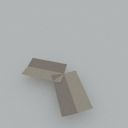
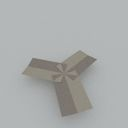
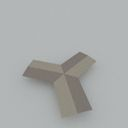
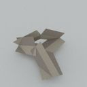
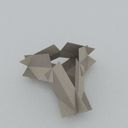
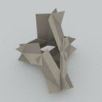
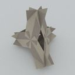

{kind=link}
{kind=link}
One day when I had no work to do, I noticed a box of business cards had been left in the drawer of my desk. I wondered if I could think of some way to use them, to build something maybe. . . After some thinking and experimentation I devised a construction technique, using only cutting and no gluing.
I built a cube, and the method worked well. Everyone walking by my desk commented on its coolness.
It is possible to build the five platonic solids with this method, the best being the dodecahedron, which, at about 0.3m diameter, makes a conspicuous desk ornament.
Here are step by step instructions for building the simplest one. It might look a bit complicated, but the detail should make it quite straightforward, although it does require a certain amount of geeky diligence:
tetrahedron
gather materials and tools
- get 15 cards of exactly the same size and shape: 12 are needed for the cardahedron, 1 for the template, and 2 for emergency spares
- get pen or pencil
- get scissors
- get ruler
- get protractor, or a printer accessible to your browser, or a non-panel display
cut template card
- initial preparation for template card
- measure the short side of a card, and halve the length
- put a pencil mark at that distance along each short side
- draw a line with a ruler joining the marks to make the card's center line
 3
3
- using a protractor
- at one end of the card, draw a line 30° from the center line, running from the short edge of the card at its center point to the long edge of the card
- draw another line at 30°, from the same center point to the other long edge of the card
- measure one of the lines, and halve the length
- put a mark that distance from the center point, on each of the lines
- cut the first line from the center point to the mark, and from the mark to the nearby card corner
- cut the second line from the long edge of the card to the mark, and from the mark to the nearby card corner
- repeat the above 6 steps at the other end of the card, on the same side, using 60° as the angle
- or, using the printable guide
- print the guide, or providing you are using a non-panel display and a pencil rather than a pen, open the guide in a separate browser window, and work directly from that
- put the card on the guide, the short edge along the horizontal line and the center line over the vertical line
- put a mark on the long edge of the card where it meets the angled line
- put a mark on the other long edge of the card where it meets the other angled line
- remove the card from the guide, and draw a line with a ruler from the first mark to the center point of the nearby short edge of the card
- draw a line with a ruler from the second mark to the center point of the nearby short edge of the card
- measure one of the lines, and halve the length
- put a mark that distance from the center point, on each of the lines
- cut the first line from the center point to the mark, and from the mark to the nearby card corner
- cut the second line from the long edge of the card to the mark, and from the mark to the nearby card corner
- repeat the above 9 steps at the other end of the card, on the same side, using the bottom part of the guide
{kind=link}
cut cards
- put a card underneath the template card, same way up and orientation as the template
- while holding the cards together, put the point of the top scissors blade into the concave corner of one of the cutaway pieces of the template, the blade along the line that was drawn with the protractor/guide
- cut
- repeat the above 2 steps for each of the 4 template corners
- repeat the above 4 steps for each of the 12 cards
join cards
(this is the most difficult part. you really just have to be careful and persistent)- start with a corner (vertex) of the cardahedron, and with two cards the same way up, slide two opposite same angle slots together
- take another card and slide one of its slots together in the same way, but not quite fully
- holding the two remaining cards with unjoined slots, gently pull the edge of one through the slot of the other and slide them together - this requires some flexing of the cards.
- pull all the joins fairly tight
- now start joining a face in a similar way. it is necessary here to pull all the joins almost out along their slots in order to fit the last card in, then gradually tighten each join in turn, repeating until they all converge
- repeat the above 5 steps until all 12 cards are joined together
- check over the whole thing, adjusting or tightening any sub-optimal joins
Here is a sequence of images of the construction (although this starts with a face, instead of a corner):
       (rendered with MiniLight)
{kind=link}
{kind=link}
{kind=link}
{kind=link}
{kind=link}
{kind=link}
{kind=link}
place on desk
- and there you have it, a businesscardahedron!